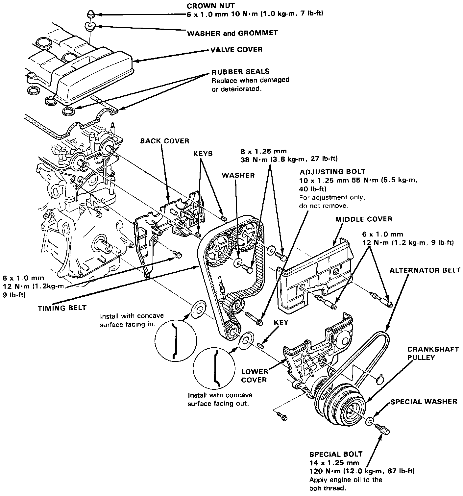
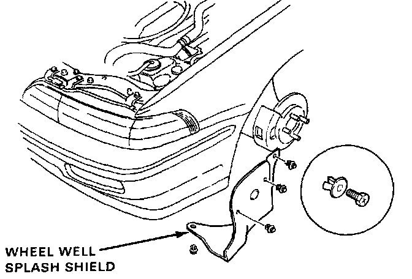
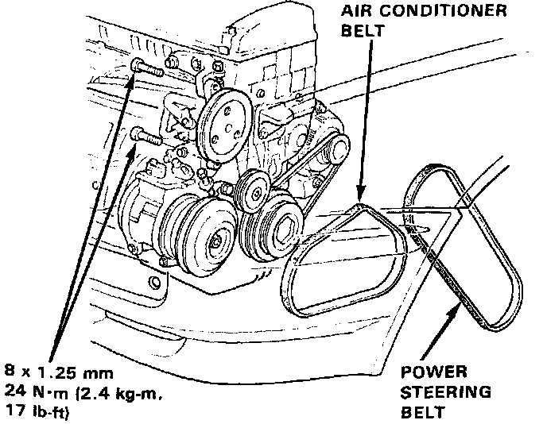
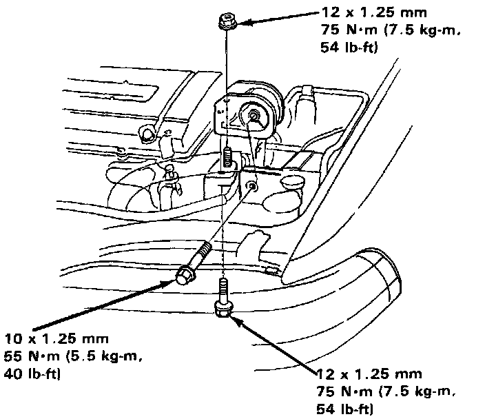
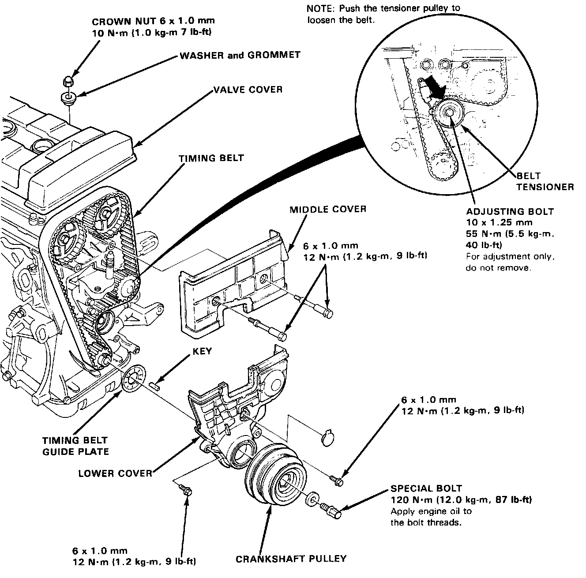
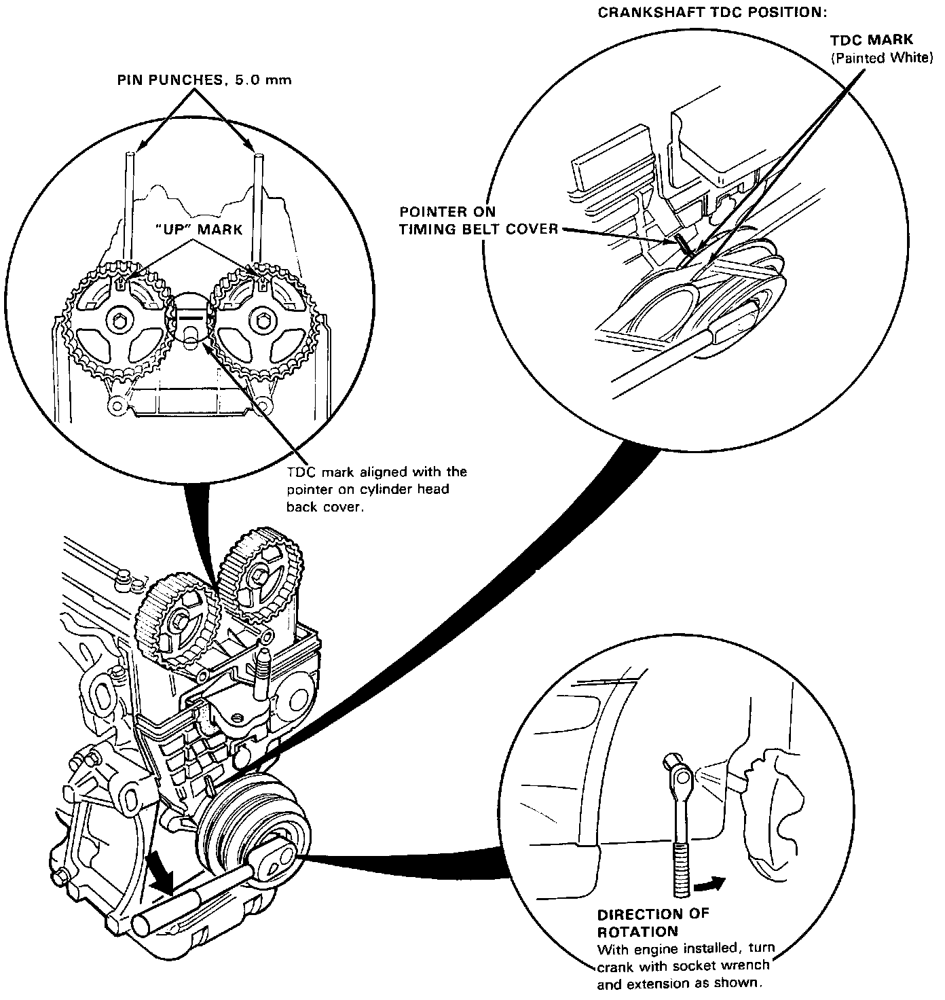

Timing Belt: Service and Repair
Timing Components:

TIMING BELT / REPLACEMENT
NOTE: Mark the direction of rotation on the belt before removing.
NOTE: Turn the crankshaft pulley so that the No. 1 piston is at TDC before removing the belt.

1. Remove the wheel well splash shield.

2. Remove the power steering belt and power steering pump.
Do not disconnect the power steering hoses.
3. Remove the air conditioner belt (standard for some types).

4. Remove the alternator belt.
NOTE: After installation, adjust the tension of each belt.
- Refer to Charging System for alternator belt adjustment.
- Refer to Steering System, for power steering pump belt adjustment.
- Refer to Heating and Air Conditioning, for air conditioning compressor belt adjustment.
- Mark direction of rotation before removing.

5. Remove the engine support bolts and nut, then remove the side mount rubber.

6. Remove the valve cover.
7. Remove the middle cover.
8. Remove the special bolt and crankshaft pulley.
9. Remove the lower cover.
10. Loosen the adjusting bolt, push the tensioner to remove tension from the timing belt, then retighten the bolt.
11. Replace the timing belt.
12. Install in reverse order of removal; adjust the valve clearances.

* Positioning Crankshaft Before Installing Timing Belt
NOTE:
- Install the timing belt with the No. 1 piston at TDC (Top Dead Center) on the compression stroke.
- To set the camshafts to TDC position for No.1 cylinder, align the hole in the camshafts with the holes in the No. 1 camshaft holders and drive 5.0 mm pin punches into the holes.
- If the pulley bolt loosens while turning the crank, retorque it to 120 N.m (12.0 kg.m, 87 lb.ft.).
NOTE: To set the crankshaft to TDC, install the timing belt guide plates, timing belt drive pulley, timing belt lower cover, crankshaft pulley, and crankshaft pulley bolt.
13. Perform the timing belt tension adjustment.